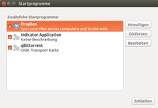
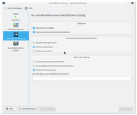
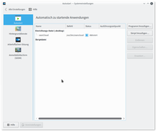
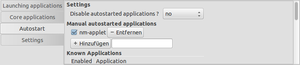

Autostart
Dieser Artikel wurde für die folgenden Ubuntu-Versionen getestet:
Ubuntu 16.04 Xenial Xerus
Ubuntu 14.04 Trusty Tahr
Zum Verständnis dieses Artikels sind folgende Seiten hilfreich:
Einen Editor öffnen, optional
 In diesem Artikel geht es um den automatischen Start von Anwendungsprogrammen nach dem Anmelden an der grafischen Oberfläche. Anwendungsbeispiele sind etwa der automatische Start von Instant-Messaging-Programmen wie Pidgin, oder ein Terminalfenster automatisch laden zu lassen. Möchte man bereits während des Systemstarts Befehle oder Dienste ausführen lassen, so benutzt man dafür besser rc.local.
In diesem Artikel geht es um den automatischen Start von Anwendungsprogrammen nach dem Anmelden an der grafischen Oberfläche. Anwendungsbeispiele sind etwa der automatische Start von Instant-Messaging-Programmen wie Pidgin, oder ein Terminalfenster automatisch laden zu lassen. Möchte man bereits während des Systemstarts Befehle oder Dienste ausführen lassen, so benutzt man dafür besser rc.local.
Wer sich dafür interessiert, welche Programme nach der Anmeldung bereits automatisch im Hintergrund gestartet werden, findet im Artikel Autostart/Erläuterung weitere Informationen.
Unity/GNOME 3¶
 In der GNOME Shell bzw. Unity ab Ubuntu 14.04 kann man das Programm "Startprogramme" über die Dash, den Schnellstart oder aus dem Terminal mit
gnome-session-properties
aufrufen.
Das Menü enthält eine Liste der bereits vorhandenen Startprogramme, rechts daneben drei Knöpfe für "Hinzufügen", "Entfernen" und "Bearbeiten". Mit letzterem kann man Titel, Befehl oder Kommentar eines bestehenden Eintrags nachträglich verändern.
Alternativ kann der Autostart mit dem Optimierungswerkzeug bearbeitet werden.
Die Einstellungen für den Autostart neu eingebundener Medien (z.B. USB-Stick, CD, DVD) sind im Artikel GNOME3 Systemeinstellungen beschrieben.
MATE¶
MATE als Nachfolger der Desktop-Umgebung GNOME 2 verhält sich genauso wie sein Vorgänger.
Für aktuellen Benutzer¶
Um unter MATE Programme automatisch starten zu lassen, nutzt man den Dialog unter:
"System -> Einstellungen -> Sitzungen" oder
"System -> Einstellungen -> Startprogramme"
Die dort unter dem Reiter "Startprogramme" eingetragenen Programme werden dann mit jedem Start von MATE geladen. Eine Eintragung ist über die Schaltfläche "Hinzufügen" möglich. Alternativ kann man aus dem Menü "Anwendungen" das Programmsymbol in das Feld der Programme ziehen. Es wird dann automatisch eingetragen.
Hat man dort Programme eingetragen, die den korrekten Start von MATE behindern, so kann man diese Einträge auch von Hand im Dateisystem löschen. Im Homeverzeichnis des Benutzers finden sich dann im Ordner ~/.config/autostart/ die entsprechenden .desktop-Dateien, die man bei Bedarf wieder löschen kann.
Dokumente automatisch starten¶
Auch Dokumente und Dateien können beim Start automatisch geladen werden. Dazu muss man festlegen, mit welchem Programm dies geschehen soll. Dies wird mit dem Befehl vor dem Pfad beschrieben. Um beispielsweise OpenOffice mit einer Datei zu starten, wird in den Startprogrammen folgenden Befehl angelegt:
ooffice -writer Pfad/zur/Datei.odf
bzw.
oowriter Pfad/zur/Datei.odf
Sucht man eine universelle Lösung, kann auch
xdg-open Pfad/zur/Datei.odf
verwendet werden, um sie mit dem jeweiligen Standardprogramm zu öffnen (siehe auch xdg-utils).
Für alle Benutzer¶
Eine Sitzung gilt natürlich immer nur für den Benutzer, der gerade angemeldet ist. Soll ein Programm immer gestartet werden, egal welcher Benutzer sich gerade anmeldet, so ist dies auch möglich. Dazu muss man im Verzeichnis /etc/xdg/autostart/ mit Root-Rechten eine .desktop-Datei für das zu startende Programm mit einem Texteditor [1] anlegen. Die Datei darf einen beliebigen Namen besitzen, muss aber die Endung .desktop haben, z.B. MeinStartProgramm.desktop. Eine minimale Desktop-Datei hat folgendes Format:
[Desktop Entry] Type=Application Name=Musterprogramm Exec=Auszuführendes Kommando
Will man zusätzlich steuern, in welchen Desktop-Umgebungen der Autostart ausgeführt wird, benötigt man eine weitere Zeile wie:
OnlyShowIn=GNOME;Unity; # diese Datei wird nur in GNOME und Unity gestartet # oder alternativ NotShowIn=KDE; # dieser Datei wird nicht in KDE gestartet
Sitzung automatisch wiederherstellen (Autostart)¶
Wenn man möchte, dass alle Programme wieder gestartet werden, die vor dem Abmelden oder einem Neustart bzw. Herunterfahren geöffnet waren, erreicht man dies, indem man im Dialog "Systemeinstellungen -> Einstellungen -> Startprogramme" die Option "Automatisch die laufenden Programme beim Abmelden merken" aktiviert. Ab sofort werden alle geöffnet Programme nach dem Neustart oder Herunterfahren wieder geöffnet.
Kubuntu / KDE¶
|  |
| KDE Sitzungseinstellungen |
KDE-Sitzungsverwaltung¶
Über die Sitzungsverwaltung von KDE Plasma kann man das Verhalten von Plasma nach dem Anmelden des Benutzers einstellen. Die Sitzungsverwaltung findet man in den KDE Systemeinstellungen unter
"Systemeinstellungen -> Systemverwaltung -> Starten und Beenden -> Sitzungsverwaltung"
dort gibt es drei Kategorien:
"Allgemein" - Einstellungen für die Schalter beim Abmelden und Herunterfahren.
"Standardeinstellungen für das Abmelden" - Darstellung des Abmeldendialogs
"Bei der Anmeldung" - Verhalten für Sitzungen einstellen.
Einstellungen für das Verhalten beim Anmelden, wie zum Beispiel das Anmelden ohne Passworteingabe, findet man im Anmeldemanger KDM.
|  |
| KDE Autostartverwaltung |
Autostart-Verwaltung¶
In KDE gibt es eine bequeme Möglichkeit zum Verwalten der Autostart-Funktion unter:
"Systemeinstellungen -> Systemverwaltung -> Starten und Beenden"
Hier kann man vorhandene Einträge verändern, löschen oder neue Skripte und Programme (Desktop-Dateien) hinzufügen. Dazu klickt man entweder auf den Knopf "Programm hinzufügen ..." oder auf "Skript hinzufügen ...." um ein Programm oder Skript hinzuzufügen.
Im mittleren Teil des Fensters sind alle Desktop-Dateien, Skripte und Links aufgelistet, Skripte und Links zu Programmen werden beide unter der Rubrik "Skript-Datei" gelistet.
Desktop-Dateien bieten die meisten Eigenschaften, dazu aktiviert man einen Eintrag mit der linken Maustaste und wählt "Eigenschaften" aus, es werden aber nicht alle Einträge aus der Desktop-Datei angezeigt.
Über "Erweitert" im rechten Teil des Fensters und im weiter erscheinenden Dialog kann ausgewählt werden, ob die Datei nur in KDE ausgeführt werden soll.
Skripte und Links bieten 3 Eigenschaften, die mit der Dropdownschaltfläche "Vor der KDE-Anmeldung" eingestellt werden:
"Anmelden" aktiviert das auszuführende Skript/Link.
"Abmelden" führt das Skript/Link beim Herunterfahren aus.
"Vor der KDE-Anmeldung" führt das Skript/Link vor dem Start von KDE aus.
Die Eigenschaften "Abmelden" und "Vor der KDE-Anmeldung" können von KDE nur ausgeführt werden wenn das Skript die Endung .sh hat z.B. StartScript.sh, beim Auswählen dieser Eigenschaften erscheint ein Dialog mit einer Fehlermeldung, die dies beinhaltet.
Alternative Methode¶
Die folgende Methode ist von der Sitzungsverwaltung unabhängig. Im Homeverzeichnis des Benutzers gibt es einen Autostart-Ordner (siehe unten für 14.04 oder 16.04), alle Programme, Skripte oder Links zu solchen werden beim Anmelden ausgeführt. Mit dem Dateimanager öffnet man den persönlichen Ordner und lässt sich mit
"Ansicht -> Versteckte Dateien anzeigen"
die versteckten Dateien anzeigen. Bei Kubuntu 14.04 wechselt man in das versteckte Verzeichnis .kde, anschließend in den Unterordner Autostart. Bei Kubuntu 16.04 wechselt man in .config und anschließend in autostart. Nun teilt man die Ansicht oder öffnet ggf. einen zweiten Dateimanager und navigiert zu der ausführbaren Datei, die man starten will; die meisten befinden sich im Verzeichnis /usr/bin/. Die gewünschte Datei fasst man nun mit der linken Maustaste an und zieht sie in den Autostartordner. Im darauf folgenden Dialog wählt man "Hierher verknüpfen".
Es können im Autostart Ordner auch Desktop-Dateien wie oben beschrieben abgelegt werden. Dies geht am einfachsten, indem man einen Menüeintrag aus dem K-Menü mittels Drag&Drop in den Autostart Ordner zieht und eine Kopie erstellt. Die Desktop-Datei enthält dann alle benötigten Werte.
Probleme mit selbst-startenden Programmen¶
Hat man ein Programm , dass sich selbst startet aber nicht an den oben beschriebenen Stellen eingetragen ist, so lohnt sich der Blick in ~/.kde/share/config. In der zugehörigen Konfigurationsdatei (meist PROGRAMMNAMErc) ist eine Autostarteinstellung auch möglich. Man öffnet diese Datei mit einem Editor und setzt Autostart=0.
Eine weitere Stelle, um nach Startern zu suchen, ist /usr/share/autostart. Im Terminal dorthin navigieren und mit Root-Rechten die entsprechenden .desktop-Dateien löschen.
Xubuntu / Xfce¶
Auch unter Xfce gibt es Werkzeuge, um beim Anmelden des Benutzers auszuführende Programme zu verwalten. Die Sitzungsverwaltung befindet sich unter
"Einstellungen -> Einstellungsverwaltung für Xfce4 -> Sitzung und Startverhalten -> Automatisch gestartete Anwendungen"
bzw.
"Einstellungen -> Einstellungen -> Sitzung und Startverhalten -> Automatisch gestartete Anwendungen"
Nun kann man vorhandene Einträge (de-)aktivieren und über "Hinzufügen" weitere zu startende Programme einfügen.
Lubuntu / LXDE¶
Neben den systemweiten Einstellungen (siehe Openbox) verwenden LXDE und Lubuntu den gleichen Mechanismus wie Unity, GNOME und Xfce: .desktop-Dateien im Ordner ~/.config/autostart/. Unter Lubuntu existiert mit "Einstellungen -> Sitzungseigenschaften" (oder "Einstellungen -> Desktop-Sitzungseinstellungen") ein grafisches Werkzeug, das das De-/Aktivieren von Autostart-Einträgen, aber (bisher) nicht das Hinzufügen bzw. Entfernen von Programmen ermöglicht (siehe auch Autostart manuell bearbeiten).
Ab Lubuntu 14.04¶

Ab Lubuntu 14.04 müssen benutzerdefinierte Autostarts im  Startmenü über "Einstellungen -> Default applications for LXSession -> Autostart" hinzugefügt werden. Dazu gibt man den Namen der Programmdatei ein und klickt auf die Schaltfläche "Hinzufügen". Es wird empfohlen, auf die bisher benutzten .desktop-Dateien im Ordner ~/.config/autostart/ zu verzichten und den Inhalt des Ordners zu löschen.
Startmenü über "Einstellungen -> Default applications for LXSession -> Autostart" hinzugefügt werden. Dazu gibt man den Namen der Programmdatei ein und klickt auf die Schaltfläche "Hinzufügen". Es wird empfohlen, auf die bisher benutzten .desktop-Dateien im Ordner ~/.config/autostart/ zu verzichten und den Inhalt des Ordners zu löschen.
Alternativ können Autostart-Programme in die Datei ~/.config/lxsession/Lubuntu/autostart eingetragen werden. Beispiel (Anzeige des Symbols für den NetworkManager und die fiktiven Programme foo und bar):
nm-applet foo argument1 argument2 # ein Kommentar @bar
Optional kann man dem Programmnamen das Zeichen @ voranstellen. Dieses sorgt bei einem Fehler für das erneute Ausführen des jeweiligen Programms. Ein nachgestelltes & wie z.B. bei Fluxbox ist nicht erforderlich. Man beachte, dass Shell-Funktionen wie Anführungszeichen, Escapen oder mehrzeilige Kommandos hier nicht unterstützt werden. Kompliziertere Kommandos sollte man stattdessen in ein eigenes Shell-Skript auslagern und dieses Skript per Autostart aufrufen.
Problembehebung¶
Autostart-Pfade¶
Da bei den verschiedenen Ubuntu-Varianten und -Versionen schon mal der Überblick verloren gehen kann, hier eine kurze Zusammenfassung:
pro Benutzer:
Unity, GNOME, XFCE, LXDE: ~/.config/autostart/
bei LXDE auch die Datei ~/.config/lxsession/PROFIL/autostart
KDE SC: ~/.kde/Autostart/, seltener ~/.kde/share/config/
systemweit:
Unity, GNOME, XFCE, LXDE: /etc/xdg/autostart/ (manchmal auch andere Ordner unterhalb von /etc/xdg/)
KDE SC: /usr/share/autostart/
Ein weiterer Sonderfall sind eigenständige Fenstermanager. Hierzu sei (soweit vorhanden) auf die jeweiligen Artikel zu den einzelnen Programmen verwiesen. Wie komplex das im Einzelfall sein kann, wird am Beispiel Openbox schnell deutlich...
Manchmal findet man auch Autostart-Einträge (wie beispielsweise das Aktivieren des Zahlenblocks), die über einen Displaymanager realisiert sind.
Autostart über Skript¶
Es kommt gerade beim Autostart immer wieder vor, dass die Zeile mit exec=... nicht zum Erfolg führt. Dann ist ein Umweg erforderlich. Dazu erstellt man sich im Ordner /usr/local/bin mit Root-Rechten ein Shellskript test.sh mit dem problematischen Befehl und macht die Datei nach dem Speichern ausführbar. Beispiel:
1 2 | #!/bin/sh
befehl
|
Dann verweist man in der .desktop-Datei mit exec=/usr/local/bin/test.sh auf dieses Shellskript.
Wenn man einen Befehl nicht nur ausführen, sondern auch die Rückmeldung sehen möchte, bastelt man sich ein Shell-Skript nach folgendem Muster:
1 2 3 4 | #!/bin/sh echo | befehl echo "press any key" read -s |
Damit wird das Beenden der Ausgabe solange verhindert, bis eine beliebige Taste gedrückt wird. Zum Start des Skripts sollte die dazugehörige .desktop-Datei in diesem Fall die Zeile
Terminal=true
enthalten (siehe Programmstarter).
Autostart verzögern¶
Möchte man, dass ein Programm später ausgeführt wird, so kann man folgenden Befehl für den Autostart verwenden:
sh -c "sleep ZEIT; BEFEHL"
Möchte man z.B. Firefox 20 Sekunden nach dem Anmelden starten, so gibt man ein:
sh -c "sleep 20; firefox"
- Erstellt mit Inyoka
-
 2004 – 2017 ubuntuusers.de • Einige Rechte vorbehalten
2004 – 2017 ubuntuusers.de • Einige Rechte vorbehalten
Lizenz • Kontakt • Datenschutz • Impressum • Serverstatus -
Serverhousing gespendet von